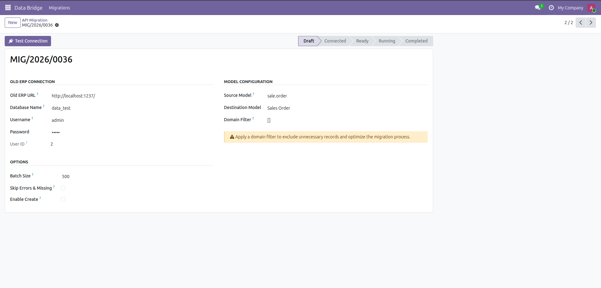
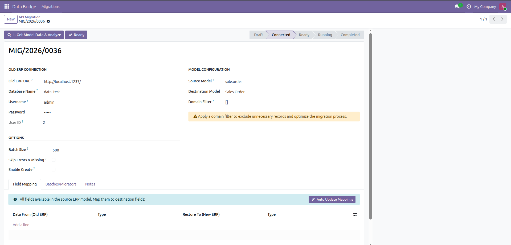
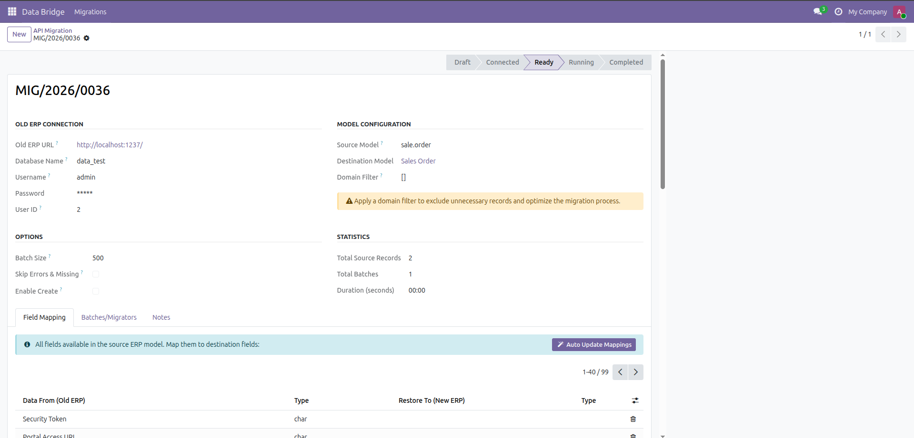
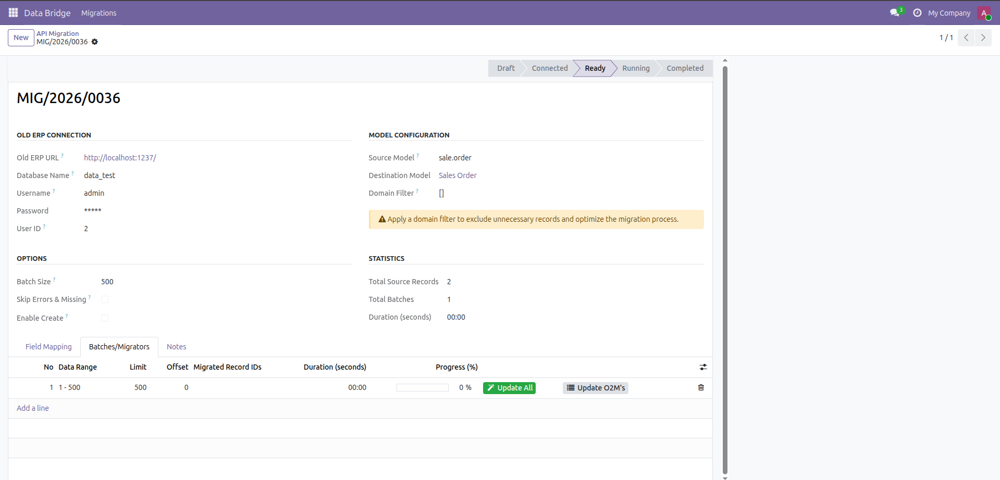
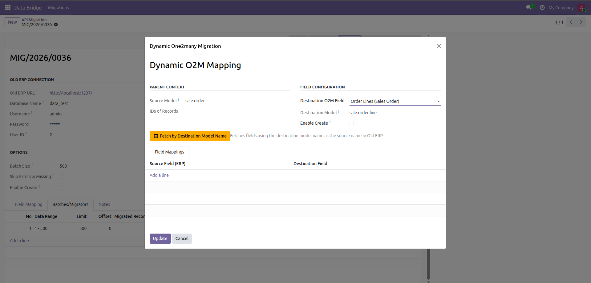

Migration Workflow
Connection Setup
Enter the credentials and connection details of the source ERP instance. Click the Test Connection button to verify the link. A success message indicates that the systems are ready to communicate.

Model Analysis
Once connected, refresh the screen and click Get Model Data & Analyze. This fetches the source model schema and prepares the mapping environment.

Field Mapping
Navigate to the Field Mapping tab. Map the source fields from the old ERP to the corresponding destination fields in your current system. Use the Auto Update Mappings button to automatically match fields with identical technical names. Once satisfied, click the Ready button to lock the configuration.

Batch Processing & Statistics
Switch to the Batches/Migrators page. This view lists prepared data segments and provides real-time Statistics including Total Source Records, Total Batches, and Duration. Click Update All to begin migrating all standard fields (excluding One2many relationships).

Dynamic One2many Migration
To migrate child records, click the dedicated button. In the resulting wizard, specify the Destination Field. Use the Fetch by Destination button to automatically retrieve compatible fields from the source instance.

Final Synchronization
Perform the final field mapping within the One2many wizard. Click Update to finalize and create all related child records in your destination model.
